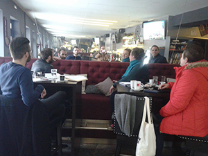
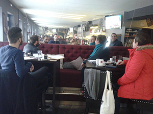

O nama
TKO I KADA?
Kulturna udruga za baštinu i stvaralaštvo Baštinica osnovana je početkom 2018. godine u Otočcu s ciljem unaprjeđenja kulture življenja svih građana, a s naglaskom na predstavljanju i očuvanju bogate kulturne i prirodne baštine i tradicijskih kulturoloških obilježja, na poticanju slobodnog kulturnog i kreativnog izražavanja pojedinaca i grupa te unaprjeđenju stvaralačke klime u Gackoj.ŠTO?
Udruga se zalaže za dinamičan kulturni život organiziranjem književnih večeri, festivala, izložaba, radionica i predavanja, književnih natječaja, predstavljanja knjiga, tiskanja publikacija i knjiga i drugih događanja koja promoviraju kulturnu baštinu Gacke i Like te potiču stvaralaštvo.Organizira kreativne radionice i edukacije kulturno-turističkog karaktera te posebna turistička vođenja s naglaskom na mistici i tajanstvenosti baštinske i tradicijske kulture (ostatci starih građevina, spomenička baština, nepoznate zanimljivosti, narodne priče i legende, običaji).
ZAŠTO?
Uvidjeli smo ogroman nepopunjeni prostor u činjenici da politika i javne institucije ne mogu odgovoriti na neke osnovne izazove današnjice, među njima i prepoznati i iskoristiti kulturno-povijesnu i prirodnu baštinu kao jedan od važnih temelja umrežavanja kulture, poduzetništva i gospodarstva. Na lokalnim razinama u cijeloj Hrvatskoj malo gdje su ustanove u kulturi prepoznate, kadrovski ekipirane, financirane kako treba. Kulturnim udrugama kao što je naša, još je teže, puno entuzijazma, a prilika i potpora malo. Slabo je općenito prepoznato da je očuvanje baštine (po tko zna koji već put „rasute bašćine“), u bilo kojem obliku, najvažnija zadaća i naše generacije, uključujući stvaralačke oblike kojima je temelj baština i tradicija, ali na nove načine.Slabo je osviještena nužnost postojanja tj. stvaranja civilnog društva i društvenog kapitala tamo gdje ga nema ili ga je malo – u manjim mjestima, o potrebi društveno odgovornog poduzetništva, koje se više ne može temeljiti isključivo na tržišnoj isplativosti nego i na široj društvenoj dobrobiti za cijelu zajednicu.
- Zato od početka podržavamo book cafe Paradiso u Otočcu kao poželjni razvojni model.
- Zato smo zdušno potpomogli The coklje fest, kao perjanicu ekonomskog prožimanja kulture i malog poduzetništva.
- Zato podržavamo projekt cjelovite povijesno-kulturne topografije Hrvatske Darka Antolkovića.
- Zato smo od samog početka uključeni u projekt osnaživanja društvenog kapitala Zaklade Kajo Dadić iz Splita.
- Zato podržavamo kulturne projekte Katedre Čakavskoga sabora pokrajine Gacke.
- Zato smo, zajedno s Omladinskom udrugom Podum, book cafeom Paradiso i kućnom radinošću Danijele Tonković, inicijatori Mreže PLOD (Platforma održivog razvoja) - umrežavanja relevantnih dionika društvenih politika i kultura na platformi dobrobiti za zajednicu.
- Zato apliciramo na razne natječaje samostalno ili partnerski s projektima kulturna predznaka (predstavljanje zaboravljene baštine, valorizacija i brendiranje nekih lokaliteta, izrada kulturnog zemljovida, zaštita čakavskog govora, poticanja književnog stvaranja, istraživanja ostataka pripovjedačkoga blaga, arheološka istraživanja itd.).
- Zato nastavljamo projekt grupe građana - Otočki dekameron razvijajući ga kao književni kružook i kao platformu za afirmaciju (ne)poznatih autora. Aktualni nastavak aktivnosti starih i novih dekameronista je projekt Koronameron.
- Zato iniciramo arheološka (Švički vrh) i speleološka istraživanja (jama Bezdanka na Paklju).
- Zato stvaramo PROŠLOSTICE, virtualnu arhivu malo poznatih informacija, podataka, dokumenata i fotografija za područje Otočca i Gacke.

 
